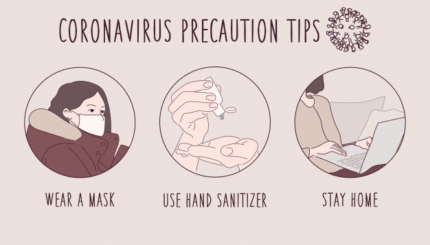
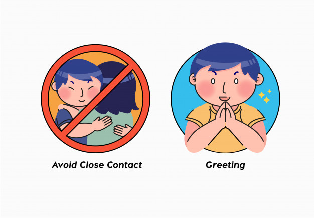

Introduction
Since the December outbreak in Wuhan, China, the new coronavirus has spread rapidly, with 4.17 million
confirmed cases in
the world as of today. According to the Centers for Disease Control and Prevention (CDC), the virus that
causes the
disease known as COVID-19 seems to be spreading in the community in certain affected geographic areas. As
with any virus,
however, there are simple steps you can take to protect yourself.
COVID-19 is mainly transmitted mainly via respiratory dorplets through sneezing, coughing or when people
interact with
each other for some time in close proximity (usually less than one metre). In order to avoid being infected
by this virus,
it is very important for the society to take precautions and practice good hygiene as part of your daily
routine. Everyone should be
responsible to protect yourself and others from the spread of this virus. By doing so,the number of people
getting infected will be reduced.
Below are some of the precautions and advices to take during this COVID-19.";
Preventative measures are your first line of defense. The best way to protect yourself
from COVID-19 is to practice good hygiene and to make these CDC recommendations part of
your routine:

Clean your hands often. Use soap and water, or an alcohol-based hand rub.
Maintain a safe distance from anyone who is coughing or sneezing.
Don't touch your eyes, nose or mouth.
Cover your nose and mouth with your bent elbow or a tissue when you cough or sneeze.
Stay home if you feel unwell.
If you have a fever, cough and difficulty breathing, seek medical attention. Call in advance.
Follow the directions of your local health authority.
Avoid close contact:

Avoid close contact with people who are sick, even inside your home. If possible, maintain 6 feet between
the person who is sick and other household members.
Put distance between yourself and other people outside of your home.
Remember that some people without symptoms may be able to spread virus.
Stay at least 6 feet (about 2 arms’ length) from other people.
Do not gather in groups.
Stay out of crowded places and avoid mass gatherings.
Keeping distance from others is especially important for people who are at higher risk of getting very
sick.
Cover your mouth and nose with a surgical face mask when around others:
You could spread COVID-19 to others even if you do not feel sick.
Everyone should wear a surgical face mask when they have to go out in public, for example to the grocery
store or to pick up other necessities.
Surgical face mask should not be placed on young children under age 2, anyone who has trouble breathing, or
is unconscious, incapacitated or otherwise unable to remove the mask without assistance.
The surgical face mask is meant to protect other people in case you are infected.
Do NOT use a facemask meant for a healthcare worker.
Clean and disinfect:
Clean AND disinfect frequently touched surfaces daily. This includes tables, doorknobs, light switches,
countertops, handles, desks, phones, keyboards, toilets, faucets, and sinks.
If surfaces are dirty, clean them. Use detergent or soap and water prior to disinfection.
Then, use a household disinfectant. Most common EPA-registered household disinfectants will work.
*For more details, please visit this website by clicking the view more.*
View
More